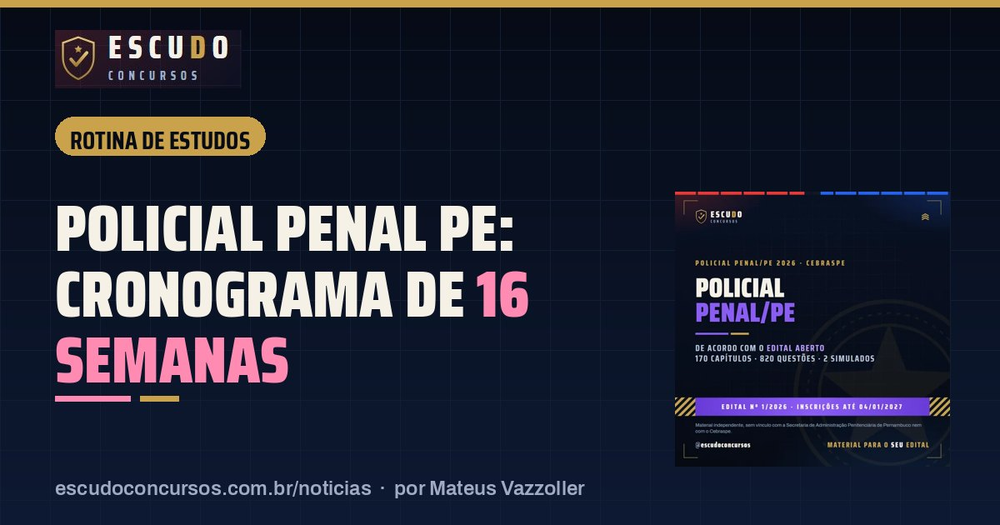

Cronograma de estudos Policial Penal PE: 16 semanas até a prova de 21/03/2027
Rotina de estudosPublicado em 25 de novembro de 2026 · por Mateus Vazzoller, ESCUDO Concursos

Quem quer vestir a farda de Policial Penal de Pernambuco e trabalhar nas unidades prisionais da SEAP/PE tem 16 semanas cheias, de segunda, 30/11, até o domingo da prova, 21/03/2027, quando o Cebraspe aplica as objetivas e a discursiva à tarde, em 4 horas e 30 minutos. Este plano reparte 15 horas por semana entre as 11 disciplinas e a discursiva, começa pela Lei de Execução Penal, que é a rotina do cargo, e reserva as quatro últimas semanas para simulado e revisão. Os dias de 25/11 a 29/11 servem de largada.
| Cargo | Policial Penal do Estado de Pernambuco (SEAP/PE), 700 vagas |
|---|---|
| Provas objetivas e discursiva | 21/03/2027 (domingo), à tarde, 4 horas e 30 minutos |
| Tempo até a prova | 16 semanas, de 30/11/2026 a 21/03/2027, mais a largada de 25/11 a 29/11 |
| Carga sugerida | 15 horas por semana |
| Prova | 20 questões de Conhecimentos Gerais, 40 de Específicos e 1 texto de até 30 linhas |
| Mínimos | 30 dos 60 pontos nas objetivas, sem mínimo por prova, e 5,00 na discursiva |
Largada: o que fazer até domingo, 29/11?
Três tarefas curtas, antes de abrir a primeira lei:
- Confira a inscrição. Ela vai até as 18h de 04/01/2027, e o boleto de R$ 250,00 pode ser pago até 06/01/2027. Quem pediu isenção vê o resultado provisório de 8 a 11/12/2026.
- Monte a agenda. Três horas em cinco dias da semana, ou blocos maiores no fim de semana. O importante é fechar as 15 horas.
- Tenha à mão o texto das leis. Na P2 quase toda disciplina é lei citada pelo número no edital, e o Cebraspe monta as opções erradas trocando uma palavra do artigo.
Como dividir 15 horas por semana?
As 60 questões valem 1 ponto cada, sem desconto por erro, e o edital elimina só quem fica abaixo de 30 pontos na soma das duas objetivas. Não há mínimo na P1 nem na P2. Por isso o tempo segue o tamanho de cada parte: dois terços para a P2, um pouco menos de um quarto para a P1 e uma fatia fixa para a discursiva.
| Disciplina | Prova | Horas por semana |
|---|---|---|
| Execução Penal | P2 | 2h |
| Legislação Especial | P2 | 2h |
| Direito Processual Penal | P2 | 1h30 |
| Direito Penal | P2 | 1h30 |
| Direito Constitucional | P2 | 1h |
| Direito Administrativo | P2 | 1h |
| Noções de Direitos Humanos e Participação Social | P2 | 1h |
| Língua Portuguesa | P1 | 1h30 |
| Legislação Estadual | P1 | 1h |
| Ética no Serviço Público e Noções de Informática | P1 | 1h |
| Discursiva (Atualidades) | P3 | 1h30 |
| Total | 15h |
Ética e Informática dividem a mesma hora: cada uma tem um programa curto, e uma semana fica com uma, a semana seguinte com a outra.
Semana a semana até a prova
A coluna do cargo traz o que o policial penal aplica dentro da unidade: a LEP, as leis penais especiais e as normas de saúde e educação no sistema prisional. A coluna penal e pública anda com Penal, Processo Penal, Constitucional e Administrativo. A terceira coluna é a parte da P1 que quase ninguém traz de outro concurso, a legislação de Pernambuco.
| Semana | Período | Bloco do cargo | Bloco penal e público | Conhecimentos Gerais |
|---|---|---|---|---|
| 1 | 30/11 a 06/12 | LEP: objeto, classificação, assistência e trabalho do preso | Penal: aplicação da lei penal. Constitucional: princípios fundamentais e direitos individuais | Código Penitenciário de Pernambuco (Lei nº 15.755/2016) |
| 2 | 07/12 a 13/12 | LEP: deveres, direitos e disciplina. Lei de Drogas | Penal: fato típico, ilicitude e culpabilidade. Processo Penal: princípios e inquérito | LC estadual nº 106/2007, normas disciplinares do policial penal |
| 3 | 14/12 a 20/12 | LEP: órgãos da execução e conselhos (arts. 62 a 64, 69, 70, 80 e 81). Abuso de Autoridade e Tortura | Penal: imputabilidade e concurso de pessoas. Constitucional: direitos sociais, políticos e remédios | LC estadual nº 422/2019, atribuições do policial penal |
| 4 | 21/12 a 27/12 | LEP: estabelecimentos penais e regimes. Estatuto do Desarmamento. Semana do Natal: manter ao menos as questões | Processo Penal: ação penal e competência | Ética: função pública e Código de Ética estadual (Decreto nº 46.852/2018) |
| 5 | 28/12 a 03/01 | LEP: execução das penas, progressão, remição e livramento condicional | Penal: crimes contra a pessoa e contra o patrimônio | Ética: sindicância e PAD na Lei nº 8.112/1990 |
| 6 | 04/01 a 10/01 | LEP: incidentes e procedimento judicial. Sistema Penitenciário Federal (Lei nº 11.671/2008 e Decreto nº 6.877/2009) | Processo Penal: provas, cadeia de custódia e busca e apreensão | Constituição do Estado de Pernambuco |
| 7 | 11/01 a 17/01 | Crimes Hediondos, Lei nº 7.716/1989, ECA e Maria da Penha | Processo Penal: prisões, fiança e medidas cautelares | Lei estadual nº 6.123/1968, regime jurídico dos servidores |
| 8 | 18/01 a 24/01 | Organizações criminosas, Lei nº 15.358/2026, interceptação telefônica e lavagem de dinheiro | Penal: crimes contra a dignidade sexual, a incolumidade, a paz e a fé pública | LC estadual nº 150/2009, LC estadual nº 487/2022 e EC nº 53/2020 |
| 9 | 25/01 a 31/01 | Saúde e educação no sistema prisional: Portaria Interministerial nº 1/2014, Decreto nº 7.626/2011, Resoluções do CNPCP e Portaria nº 210/2014 | Penal: crimes contra a administração pública. Administrativo: princípios, organização e atos | Informática: Windows, Office 365, internet e LGPD |
| 10 | 01/02 a 07/02 | Direitos Humanos: Declaração Universal, Pacto de São José e Regras mínimas da ONU para presos | Administrativo: poderes, agentes, processo administrativo e improbidade | Português: morfossintaxe, crase e concordância |
| 11 | 08/02 a 14/02 | Leis restantes: crimes ambientais, Pessoa Idosa, trânsito, eleitorais, Juizados, Lei nº 12.830/2013 e Estatuto da Juventude | Constitucional: organização do Estado, servidores e segurança pública. Administrativo: licitações e contratos | Português: reescritura de frases |
| 12 | 15/02 a 21/02 | Revisão da LEP e da Legislação Especial só por questões | Constitucional: poderes e controle de constitucionalidade | Revisão da legislação estadual |
| 13 | 22/02 a 28/02 | Primeiro simulado completo | Revisão dos erros do simulado | Revisão dos erros do simulado |
| 14 | 01/03 a 07/03 | Segundo simulado; consultar o local de prova pelo edital de 05/03/2027 | Só as disciplinas em que o simulado foi pior | Só as disciplinas em que o simulado foi pior |
| 15 | 08/03 a 14/03 | Terceiro simulado | Revisão dos resumos e dos erros | Revisão dos resumos e dos erros |
| 16 | 15/03 a 21/03 | Revisão leve da LEP | Revisão leve | Descanso no sábado, 20/03; prova no domingo, 21/03, à tarde |
Português entra toda semana, um tema por vez: interpretação e tipologia textual nas semanas 1 a 3, ortografia e acentuação nas semanas 4 e 5, coesão e tempos verbais nas semanas 6 a 9, e o resto na sequência da tabela. Até a semana 11, metade do tempo é teoria e metade é questão de cinco alternativas. Da semana 12 em diante, não entra conteúdo novo.
Como treinar a discursiva?
A discursiva é um texto dissertativo de até 30 linhas sobre um tema de atualidade, que o edital liga à segurança prisional nacional e aos direitos humanos. Vale 10,00 pontos, e o mínimo é de 5,00. A nota de conteúdo perde 2 × número de erros ÷ linhas escritas: quem escreve 30 linhas e comete 3 erros perde 0,2 ponto; quem escreve 15 linhas com os mesmos 3 erros perde o dobro.
| Semanas | O que treinar |
|---|---|
| 1 a 3 | Estrutura: introdução com a tese, dois parágrafos de argumento e conclusão com proposta |
| 4 a 8 | Um texto por semana, à mão, com temas como superlotação, ressocialização, saúde e educação nas prisões e facções |
| 9 a 12 | Um texto por semana no tempo de prova, contando as linhas e os erros |
| 13 a 15 | O texto entra dentro do simulado, nas 4 horas e 30 minutos |
As leis da coluna do cargo servem de repertório: a LEP, as Regras mínimas da ONU e as normas de saúde e educação no sistema prisional são exatamente o tipo de argumento que um texto sobre o tema pede. Lembre que a discursiva só é corrigida para quem passa nas objetivas, dentro dos quantitativos do edital: 2.094 na ampla concorrência masculina.
Como fazer os simulados das semanas 13 a 15?
- Faça as 60 questões e a discursiva de uma vez, à tarde, em 4 horas e 30 minutos, como no dia 21/03. Separando 1 hora para o texto, sobram 3 minutos e meio por questão.
- Corrija pela régua do edital: pelo menos 30 pontos nas duas objetivas somadas e 5,00 na discursiva, com a fórmula de desconto por erro.
- Marque todas as questões. Não há desconto por erro, então resposta em branco é ponto perdido.
- Anote as duas disciplinas que mais tiraram pontos e leve a semana seguinte para elas.
O curso Polícia Penal PE traz 2 simulados de 60 questões no formato do Cebraspe; o terceiro pode ser montado com as questões comentadas dos capítulos.
E o teste físico?
Os exames de aptidão física estão previstos para 12 a 18/08/2027, bem depois da prova, mas pedem preparo de meses: barra fixa (ou barra estática, para as candidatas), impulsão horizontal, flexão abdominal e corrida de 12 minutos. Encaixe dois ou três treinos curtos por semana desde já, fora das 15 horas de estudo. Os índices de cada teste estão no guia do concurso.
E se eu só tiver 8 horas por semana?
Mantenha a ordem das semanas e corte em proporção: Execução Penal e Legislação Especial com 2h30 juntas, Penal e Processo Penal com 1h30, Constitucional, Administrativo e Direitos Humanos com 1h30, P1 com 1h30 e discursiva com 1h. A coluna do cargo continua com a maior fatia, porque é o que o edital mais cita pelo número.
Curso ESCUDO Policial Penal de Pernambuco em PDF: 170 capítulos e 820 questões, de acordo com o edital aberto, 2 simulados de 60 questões. De R$ 47 por R$ 37 com o cupom PPPE37 até 04/01/2027.
Ver o curso
Perguntas frequentes
Quando é a prova da Polícia Penal de Pernambuco?
As provas objetivas e a discursiva são no domingo, 21/03/2027, à tarde, com 4 horas e 30 minutos de duração, em Arcoverde, Caruaru, Petrolina e Recife. O edital com os locais de prova sai em 05/03/2027.
Qual matéria estudar primeiro para Policial Penal PE?
A Lei de Execução Penal, junto com a Legislação Especial e o Código Penitenciário de Pernambuco. São leis citadas pelo número no edital, ligadas ao trabalho na unidade prisional.
Quantos pontos preciso fazer na prova do Cebraspe?
Pelo menos 30 dos 60 pontos nas duas provas objetivas somadas, sem mínimo para a P1 ou a P2, e 5,00 dos 10,00 pontos na discursiva. A classificação depois disso segue a soma das notas.
Leia também
- Rotina de estudosCronograma de estudos PC-PE Agente: 14 semanas até a prova de 07/03/2027
26 de novembro de 2026 · Plano de 14 semanas até a prova do Cebraspe de 07/03/2027 para Agente da PC-PE: 15 horas por semana, Contabilidade cedo e redação toda semana.
- Rotina de estudosCronograma Agente Administrativo de Curitiba: 3 semanas até a prova de 13/12/2026
24 de novembro de 2026 · Cronograma de 3 semanas para a prova da FAFIPA de 13/12/2026 para Agente Administrativo de Curitiba: meta de acertos por área, plano semanal e reta final.
- Rotina de estudosCronograma de estudos PM-PE Soldado: 13 semanas até a prova de 21/02/2027
22 de novembro de 2026 · Plano de 13 semanas para a prova do Instituto AOCP de 21/02/2027 para Soldado da PM de Pernambuco: 15 horas por semana, Bloco III primeiro e redação semanal.
Guia completo do concurso: edital, vagas e o que cai · Mais notícias e dicas de concursos